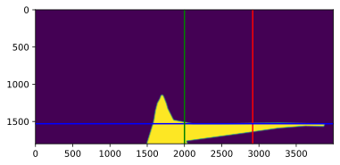

import cv2 as cv
import os
import matplotlib.pyplot as plt
import numpy as np
os.getcwd()
'/data/uni/PBA-TI/3.2/afstudeerproject/cv_drone'
img = cv.imread('../clean/steentjes/gt/00000001.png',0)
print(img)
[[0 0 0 ... 0 0 0]
[0 0 0 ... 0 0 0]
[0 0 0 ... 0 0 0]
...
[0 0 0 ... 0 0 0]
[0 0 0 ... 0 0 0]
[0 0 0 ... 0 0 0]]
im_array = np.asarray(img)
row_y = int(0.85 * img.shape[0])
row = im_array[row_y]
integraal = np.cumsum(row)
path_center = np.argmax(integraal > max(integraal) / 2)
path_center = 0.95 * img.shape[1]
image_center = len(row)/2
image_center
2000.0
path_center_offset = path_center - image_center
steer = path_center_offset / image_center
path_center_offset, steer
(1800.0, 0.9)
plt.imshow(im_array)
plt.axvline(x=path_center, c='r')
plt.axhline(y=row_y, c='b')
plt.axvline(x=image_center, c='g')
plt.show()
